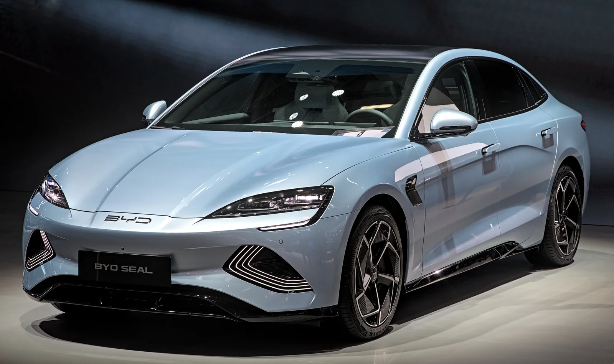

▲ 아이오닉 V는 BYD 씰보다 825만~1,238만 원 낮은 가격을 매겼다 ⓒ Wikimedia Commons
아이오닉 V의 중국 사전판매 가격이 나왔습니다.
11만9,900위안, 약 2,475만 원부터입니다. 최상위 롱레인지도 13만9,900위안(약 2,888만 원)입니다.
업계가 예상하던 20만~25만 위안의 절반 수준입니다. 현대차가 중국에서 무엇을 포기하고 무엇을 노리는지가 이 숫자에 드러납니다.
1. 가격표
| 트림 | 위안 | 원화 환산 |
|---|---|---|
| 스탠다드 에디션 | 119,900위안 | 약 2,475만 원 |
| 스마트 드라이빙 에디션 | 129,900위안 | 약 2,681만 원 |
| 롱레인지 에디션 | 139,900위안 | 약 2,888만 원 |
세 트림의 간격이 각각 1만 위안(약 200만 원)입니다. 최상위와 최하위의 차이가 2만 위안밖에 안 됩니다. 트림 간 문턱을 의도적으로 낮춘 구성입니다.
※ 바로잡습니다
본지는 2026년 8월 20일자 청두 오토쇼 기사에서 아이오닉 V의 예상 가격을 "20만~25만 위안(약 4,000만~5,000만 원)"으로 전했습니다. 이는 공개 전 업계 예상치를 인용한 것으로, 실제 사전판매 가격은 11만9,900~13만9,900위안(약 2,475만~2,888만 원)입니다. 해당 기사도 함께 정정했습니다.
2. BYD 씰과 나란히 놓으면
| 차량 | 시작가 | 차이 |
|---|---|---|
| 아이오닉 V | 약 2,475만 원 | 기준 |
| BYD 씰 (중국) | 약 3,509만 원 | +1,034만 원 |
| BYD 씰 (국내) | 3,990만 원 | +1,515만 원 |
| 샤오펑 P7+ · 지커 007 | 18만 위안(약 3,715만 원) 이상 | +1,240만 원 이상 |
중국 전기 세단 시장에서 이 가격대는 아래쪽입니다. 샤오펑 P7+와 지커 007이 18만 위안 이상에서 시작하는데, 아이오닉 V는 그 3분의 2 수준입니다.
이건 현대차가 중국에서 프리미엄을 포기했다는 뜻이기도 합니다. 한국에서 아이오닉 5·6이 놓인 자리와 완전히 다릅니다.
3. 왜 이렇게까지 낮췄나
| 항목 | 내용 |
|---|---|
| 판매 | 2026년 7월 중국 판매 전년 대비 46.8% 감소 |
| 경쟁 | 샤오펑 모나 M03, MG 07 등 저가 공세 |
| 브랜드 | 중국 소비자에게 현대차는 프리미엄 포지션이 아니다 |
| 전략 | 마진보다 물량과 존재감 확보 우선 |
같은 날 MG 07이 1분 57초 만에 확정 주문 1만 대를 채웠습니다. 시작가는 10만5,900위안입니다. 현대차가 상대하는 시장의 온도가 이 정도입니다.
브랜드 프리미엄으로 버틸 수 있는 국면이 아니라는 판단이 가격에 반영된 것으로 보입니다.

▲ BYD 씰은 중국에서 약 3,509만 원, 국내에서 3,990만 원이다
4. 값을 낮추면서 뺀 것과 넣은 것
| 차체 | 4,900 × 1,890 × 1,470mm, 휠베이스 2,900mm |
|---|---|
| 배터리 | CATL LFP 53.5kWh / 66.8kWh |
| 주행거리 | CLTC 520~650km |
| 모터 | 싱글모터 140kW(188마력) / 168kW(225마력) |
| 디스플레이 | 퀄컴 스냅드래곤 8295 기반 27인치 4K 통합 |
| AI | 바이두 어니봇, 바이트댄스 더우바오 |
| 주행보조 | 모멘타 고속 주행 보조 |
| HUD | 사이버 아이 기본 |
원가를 줄인 곳은 파워트레인입니다. 전 트림 싱글모터이고 배터리는 LFP입니다. 삼원계보다 저렴하고, 사륜을 넣지 않으면 모터와 인버터 하나를 통째로 뺄 수 있습니다.
반대로 돈을 쓴 곳은 실내 기술입니다. 27인치 4K 디스플레이와 스냅드래곤 8295는 이 가격대에서 흔치 않습니다.
이 배분이 중국 시장의 구매 기준을 보여줍니다. 마력보다 화면 크기와 AI 음성비서가 먼저 비교됩니다.
5. 국내와의 관계
아이오닉 V는 중국 전용입니다. 국내 판매 계획은 없습니다.
| 구분 | 국내 아이오닉 | 중국 아이오닉 V |
|---|---|---|
| 배터리 | 삼원계 중심 | CATL LFP |
| 주행보조 | 현대차 자체 | 모멘타 |
| AI·인포테인먼트 | 자체 + 구글·티맵 | 바이두·바이트댄스 |
| 포지션 | 프리미엄 지향 | 가격 경쟁 |
같은 회사가 만든 전기차인데 부품 구성이 거의 겹치지 않습니다. 현지화가 어디까지 갈 수 있는지를 보여주는 사례입니다.

▲ 국내 아이오닉 라인업과 중국 아이오닉 V는 부품 구성이 거의 겹치지 않는다

▲ 현대차는 시장별로 전혀 다른 전기차 라인업을 운영한다
6. 정리
아이오닉 V의 중국 사전판매 가격은 11만9,900~13만9,900위안(약 2,475만~2,888만 원)입니다. 트림 간 간격은 각 1만 위안입니다.
BYD 씰(중국 약 3,509만 원)보다 825만~1,238만 원 저렴하고, 샤오펑 P7+·지커 007(18만 위안 이상)의 3분의 2 수준입니다.
CATL LFP 53.5·66.8kWh로 CLTC 520~650km, 모터는 140kW·168kW 싱글모터입니다. 파워트레인에서 아낀 원가를 27인치 4K 디스플레이와 스냅드래곤 8295, 바이두·바이트댄스 AI에 썼습니다. 국내 판매 계획은 없습니다.